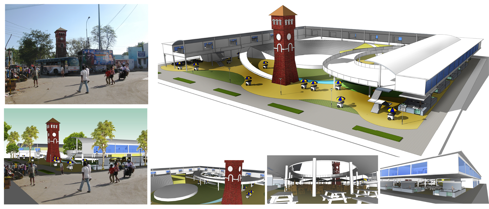

Redesign of Asia's Oldest Vegetable Market
For the graduation thesis project for B.Arch, I chose to work on an urban design intervention at Trichy.
It was definitely irreverent proposal, suggesting a complete build-over of the market, with very little effort to conserve the built heritage, and instead tries to appropriate the culture into the proposed new design. I'm glad nobody took it seriously enough.
My biggest takeaway from this project, however was in the research phase, where I travelled to Delhi, Ahmedabad, Mumbai and Chennai to understand India's best and worst urban public spaces.